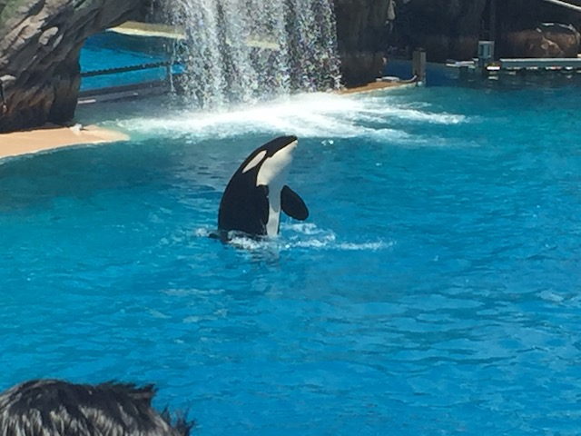

Sea World San Diego is a very intersting park. When I first visited the park, it was fun, but it seemed more like a real kickass aquarium, and lacked in rides. Luckily, I went back in 2012 and Sea World had added a new roller coaster called Manta. And though my expectations weren't that high, MANTA IS FREAKING AWESOME!!!! This ride dramatically improved Sea World and put it on the map for roller coasters as well as just being on the map for its high quality animal shows. And now with the addition of Electric Eel, their coaster collection is now even better. You will have a damn good time at Sea World San Diego. Not only do they have two great coasters (Don't be fooled by Manta's look, is one of the better California Coasters), they do have a really good water ride, many great shows, and of course, they have a lot of fish, whales, and dolphins here. But overall, yeah. Unless you have a strong hatred for dolphins and whales, you'll have a fun time at Sea World San Diego.
Here are the reviews of all the Flat Rides at Sea World San Diego. Well there's only a handful of flat rides here. So this'll be quick. The first is their Huss Airboat called Riptide Rescue. I'm not exactly sure how popular this flat ride is, but this is currently the only one I've ever seen. The ride is not very exciting by itself. But hey!! A flat ride at Sea World San Diego!!!! They also have a small kiddy chairswings called Tentacle Twirl. I've never seen this ride run, but hey. It's good to see another ride here. The other flat rides they have is their Observation Tower. I know most people don't consider that a flat ride, but come on. I'm desperate here. Fun fact. You can see Giant Dipper from Belmont Park up there. Yes, I got some Giant Dipper Shots from Sea World San Diego. Oh yeah. They also have a Sesame Street Kids Area. So there's some kiddy flats as well. So yeah. Nothing real interesting in the flat department.
Yes, there is in fact, a flat ride at Sea World San Diego.
Dark Rides
Here are the reviews of all the Dark Rides at Sea World San Diego. Now Sea World San Diego only has one dark ride. And many people wouldn't even consider it as a dark ride. But here at Incrediblecoasters, we consider simulators to be dark rides. So here, the only dark ride would be Wild Arctic. The Simulator. It's a decent simulator, with an Alaskan Theme, except without Sarah Palin (Thank God). But after a little bit, Sea World San Diego goes and says, "Meh. Simulators aren't are thing. Let's turn the ride into an animal walk through. We're good at that." And yeah. They are MUCH better at Animal Walk Throughs than they are at simulators, as demonstrated by my usual by-passing of the simulator to just see the damn animals themselves. So then you get off and look at some arctic animals. It's very cool that the walk through ties in with the simulator. So they've got a decent simulator/very good walk through. But that's not enough to qualify for the Incrediblecoasters Good Dark Ride Collection Status. Sorry Sea World San Diego. And then, again, let's not forget about the hilarious failure that was Submarine Quest. It really doesn't say much about your dark ride collection when you try and do a real decent dark ride, and it just totally bombs. ;)
Ignore the simulator. Just come see the arctic animals. =)
Water Rides
Here are the reviews of all the Water Rides at Sea World San Diego. Now Sea World San Diego may only have one water ride, but MAN IS THIS A GOOD ONE!!!! =) They have a river rapids ride called Shipwreck Rapids. And yeah. This is a KICKASS rapids ride with great theming and literally SOAKS you from the inside out. You go through a bunch of rapids and do manage to even go under a waterfall. Yeah. There's no escaping the water on this one. And don't you think of standing up like idiots cause I'm pretty sure that Sea World uses video cameras instead of P2s. Its definetly one of my favorite water rides and even made it onto my Top 10 Water Rides. So yeah. Sea World San Diego has a GREAT water ride collection.
You can't escape the water. =)
Dining
All right. The dining selection at Sea World San Diego is pretty cool. The one place I wound up eating at was Shipwreck Reef Cafe. Surprisingly, they have a decent selection for theme park food standards. Yeah, you can get burgers, pizza, and standard things like that. But on top of that, they also have Babyback Ribs, Salmon (Not my thing, but hey. Options for you folks who like it), Chicken of all kinds (Orange Chicken, Rotisare Chicken, Not just Fried Chicken). On top of that, there's more options besides fries, such as seasoned fries, and salads (but that's boring), plus all sorts of desserts. So I was impressed with that. Also, there's the Seven Seas Food Festival, which while is no Boysenberry Festival, still had a lot of cool food to try. And from what I've heard, there's more good food for me to try at Sea World San Diego.
Food here is definately above average.
Theming and Other Attractions
Here are the reviews of all the other stuff at Sea World San Diego. As far as theming goes, they have some nice theming on Shipwreck Rapids and the park does look nice, but it's really not too heavily themed. Now onto the other stuff. And really, it's the other stuff that Sea World is famous for. Their Shows. They have really cool Dolphin Show. I liked it a lot. However, I will admit that I wish it was more Dolphins and less Cirque du Soleil. Their Sea Otter show was...cute. I admit that I enjoyed the Clyde and Seymour Show, however, it wasn't as funny as its Christmas counterpart. However, I don't think that it's a matter of the show having declined in quality, but rather, me not finding the humor as funny as I'm older. That's all. But even so, it's cute, it's silly, and it's a lot of fun to watch still. It's just a little goofier than I remembered. But most famously of all, there's their Orca Encounter. This is a big exhibit where they show off all of their Orcas, and explain to everyone how they live, and the lives of Orcas in the wild. Now, I will admit that this is a really cool exhibit. I really like it. The only thing I don't like is the reason they switched from the Orca show to the exhibit. If it was a natural decision they made on their own, I'd have no issue. But the fact that they made the switch to appease some assholes angry about a bullsh*t "documentary", that's what made me mad. And I still stand by my thoughts on "Don't appease these assholes!". Oh, and before you tell me how horrible these shows are to whales, I suggest you take a good look and see how your documentary has pretty much been proven to be bullsh*t. No really. Here's 69 ways that Blackfish is a steaming peice of f*cking propaganda. Now they also have various fish and stuff as it is Sea World and it does serve as an aquarium. Don't think that those Blackfish/PETA lunatics won't go after them too. They will. So yeah. Sea World may have a crappy flat ride collection and dark ride collection, but they kick ass in the shows department, only being behind Disney and Universal. So if there's anything to see Sea World San Diego for, it's their top notch animal shows and whale exhibits.

"Sorry bitches! I'm retired now!"
In Conclusion
Sea World San Diego is a FANTASTIC theme park. They have a great bunch of animals that perform a great bunch of shows. And considering all the good things that Sea World does for animals, its all for a great cause. They have some great water rides, and now, with the addition of Manta, they now have a GREAT roller coaster that is just a ton of fun, and despite its innocent looks, is really one of the best in the state. So yeah, it may not be a major thrill park with a ton of coasters, but that's not the type of park Sea World San Diego is aiming for. But seriously. They have two great coasters, a great water ride, great shows, and are here for a great cause. I HIGHLY recommend you stop by Sea World San Diego when visiting San Diego.
Enthusiast FAQs.
*Are there kiddy coaster restrictions? - Sea World San Diego doesn't have a kiddy coaster.
Tips
*Make sure you ride Manta. It's AWESOME!!! =)
*Stand up against all the Blackfish Bullsh*t.
*Expect it to be crowded as this is heavily marketed and pretty famous.
*Prepare to get soaked if you're sitting in the Soak Zone.
*Buy random crap to show your support of Sea World.
*Don't wear bloody clothes with chainsaws on them (You don't want to scare the dolphins).